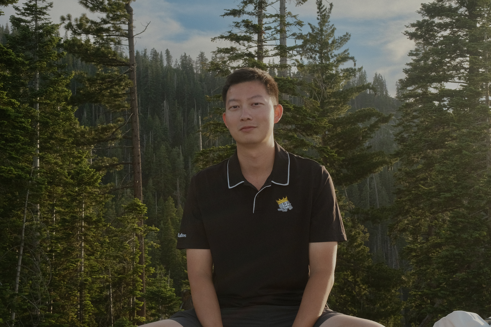

USCGRADUATE
AUG 2024 — DEC 2026
University of Southern California
M.S. in Computer Science
Los Angeles, CA
Connecting ideas, devices, and people.
A little about me
HELLO, I’M JIARUN.
I’m a software engineer and computer science master’s student at the University of Southern California.
My work connects devices, software, and people—from wireless protocols and C++ daemons to SwiftUI interfaces, backend systems, and AI applications.
Find me on LinkedInAUG 2024 — DEC 2026
M.S. in Computer Science
Los Angeles, CA
SEP 2019 — DEC 2022
B.S. in Actuarial Science
Santa Barbara, CA
Dean’s Honor List
Fall 2020 · Winter 2021 · Spring 2021